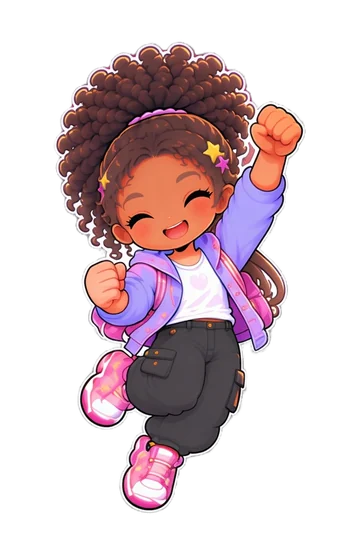

Gana Sofía
SofíaKai
Al tema8560
Razones8045
Ejemplos7865
Escucha7570
«Sostuvo su posición con un ejemplo concreto en los dos turnos.»
 Modo Negociación
Modo Negociación
Dialoga, encuentra acuerdos y avanza
Pareja
Amigos
Familia
El chiste en mitad de la discusión
Hacer una broma en mitad de una discusión, ¿baja la tensión o esquiva el tema?
Sentados o de pasada
Un tema importante, ¿se puede hablar mientras se hace otra cosa o hay que parar y sentarse?
«Luego hablamos»
Cuando llega un mensaje sobre un tema pendiente, ¿hay que contestar en el momento o vale dejarlo para después?
De una habitación a otra
Hablar a voces de una habitación a otra, ¿es lo normal en una casa o hay que ir donde está el otro?
Interrumpir para matizar
Cuando el otro cuenta su versión y dice algo que no es exacto, ¿se corrige en el momento o se espera al final?

 Defiende tu postura de forma divertida
Defiende tu postura de forma divertida
 Definen un premio y se lo ganan jugando
Definen un premio y se lo ganan jugando